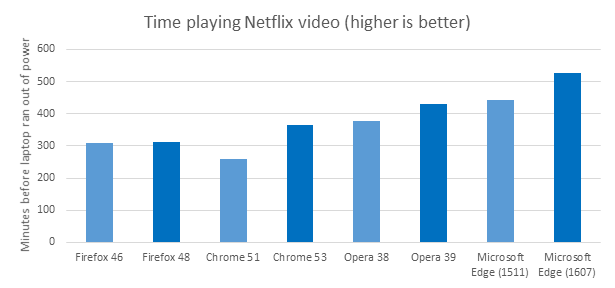

The Microsoft Windows team measured the time it took four identical Surface Book laptops to run fully through their batteries while streaming video from Netflix. The results were recorded with a camera and a time lapse was made available publicly.
The test was done on four Surface Books running 1607 (build 14393.105) and connected to the Internet through Wifi.
Microsoft Edge lasted the longest of any browser in this test. Specifically, Microsoft Edge lasted:
The test was performed on 4 separate Surface Book laptops running Windows 10 Anniversary Update (14393.105 release). These computers were configured to the following settings, to increase consistency between measures and reduce tasks that may start during the measurement and interfere with the results, while still representing a realistic user setup:
| OS | Windows 10 Pro 14393.105 rs1_release |
| Microsoft Edge | Microsoft Edge 38.14393.0.0 |
| Chrome | Google Chrome 53.0.2785.101 m (64-bit) |
| Firefox | Firefox 48.0.2 |
| Opera | Opera 39.0.2256.71 (battery saver enabled) |
The specifications for the Surface Books were:
While plugged in, each respective browser was navigated to Netflix.com and logged into the same account. The show “Nature: Animal Misfits” was queued and paused immediately on each browser. Each computer was verified to have brightness set to 75% (with ambient brightness disabled) and volume to 25%.
The times it took for each device running each respective browser to completely drain its battery are as follows:
| Time | Minutes | |
| Firefox 48 | 5:11:34 | 312 |
| Chrome 53 | 6:03:54 | 364 |
| Opera 39 | 7:08:58 | 429 |
| Microsoft Edge | 8:47:06 | 527 |
Almost every browser saw an increase from 1511 (when this test was run previously) to 1607. In this chart, the previous results have been added in for comparison. The lighter blue bars (Firefox 46, Chrome 51, Opera 38, Microsoft Edge 1511) were run on the 2015 Fall update of Windows 10 (1511).
